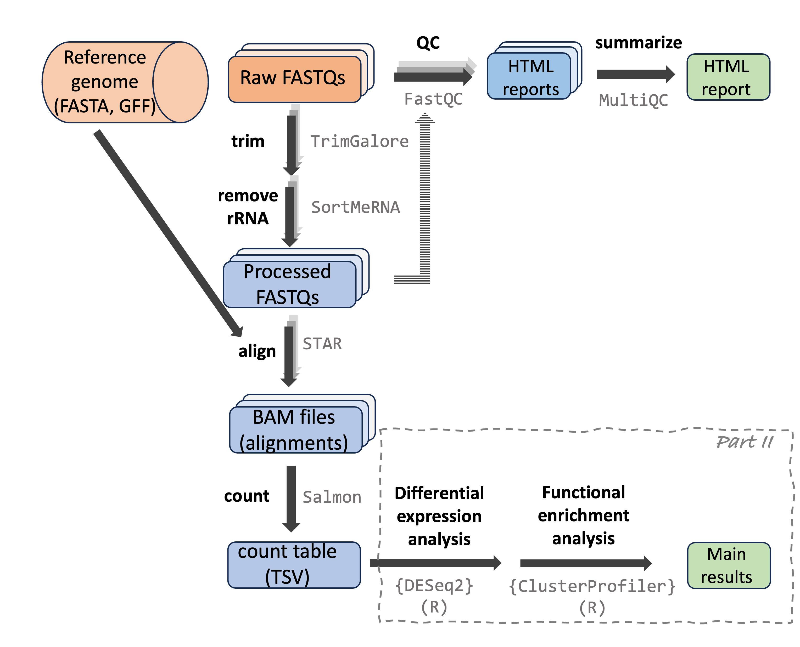

RNAseq data analysis: introduction
Workflow overview

RNAseq data analysis
RNAseq data analysis can be divided into two main parts:
A bioinformatics-heavy part in which you generate gene counts from the raw reads.
A more statistical part in which you analyze the count table to create lists of differentially expressed genes and enriched functional categories.
Part I: From reads to count table
This part starts with the raw reads from the (typically Illumina) sequencing machine to eventually generate a table with expression counts for each gene by each sample. This part:
Is usually done by sequentially running a series of programs with a command-line interface (CLI). Therefore, you typically use the Unix shell (command line) and shell scripts to do this.
Processes large amounts of data, and is generally not suitable to be run on a laptop or a desktop computer: you should use a high-performance computing (HPC) center or cloud computing. (We will use the Ohio Supercomputer Center, OSC.)
Is quite standardized and therefore, a “pipeline” written for one dataset can be run for another one with minor changes, even if the datasets are from completely different experiments or different species.
Because of the required technical skills and computing infrastructure, in combination with the standardized execution, there are some alternatives available to doing this by yourself step-by-step1:
Companies and university bioinformatics core facilities may be able to simply run this part for you.
Services with graphical user interfaces (GUIs) are available, such as Galaxy.
These run the same command-line programs, but wrap their execution in a more user-friendly way.
Such options are especially worth considering when you have no plans or ambitions to do much other genomics work in the future – in other words, it may not be worth learning all the required technical skills just for one project.
When you plan to do multiple genomics projects and/or are generally interested in gaining computing skills, it’s better to go ahead and learn to run these command-line programs yourself.
Part II: Analyzing the count table
In this part, you will analyze the table with gene counts for each sample, for example to test for differential expression among groups (e.g., different treatments) and to test whether certain functional (GO, KEGG) gene categories have distinct expression patterns as a whole.
This part:
Is typically run entirely in R, using a number of specialized R “packages”.
Is not particularly “compute-intensive”: your count table is a text file of typically only a few Mb, and the analyses you’re running do not need much time or computer memory. As such, you can run this on your laptop or desktop computer. (Though we will do it at OSC, mainly for the sake of continuity.)
Is much less standardized across projects: the details of the analysis depend a lot on your experimental design and what you’re interested in; in addition, initial results may influence your next steps, and so on.
What we’ll cover
Computing skills and genomic file formats
Many of these computing skills are needed only for part I below.
- Introduction to the Ohio Supercomputer Center (OSC)
- The VS Code (Code Server) text editor / IDE
- Introduction to the Unix shell (“command line” / “Bash”)
- Shell scripts and loops
- The
SLURMcompute job scheduler - Using and installing software at OSC
- Input genomic file formats relevant to RNAseq: FASTQ, FASTA, GTF/GFF
- Along the way, we’ll also learn about project organization and ensuring reproducibility.
- I won’t include a full-blown introduction to R, but will provide some learning resources for those of you with little R experience before we get to the relevant part of the RNAseq analysis.
Analysis part I: From sequence reads to gene counts
- Raw read QC with
FastQCandMultiQC - Read pre-processing with
TrimGaloreandSortMeRNA - Read alignment to a reference genome with
STAR(and BAM/SAM files) - Alignment QC with (at least)
MultiQC - Gene expression quantification with
Salmon
Analysis part II: Analyzing gene counts in R
- Getting an overview of sample/group distinctiveness with a PCA
- Differential expression analysis with
{DESeq2} - KEGG and GO enrichment analysis with
{ClusterProfiler}
Data type and workflow variations
Reference-based versus de novo workflows
We will cover a “reference-based” RNAseq workflow: one where your focal organism has a reference genome assembly and annotation. “De novo” RNAseq workflows are necessary when you don’t have a reference genome. They are overall similar, but more time-consuming and bioinformatics-heavy, since you will first have to assemble a transcriptome from the RNAseq data itself.
Gene-level versus transcript-level counts, and short versus long reads
We will focus on generating and analyzing gene-level counts rather than transcript-level counts: that is, for each sample, we will obtain a single count for each gene even if that gene has multiple transcripts (isoforms). However, the program which we’ll use for counting (Salmon) can also generate transcript-level counts, and downstream transcript-level analysis is fairly similar too, though this certainly adds a level of complexity.
Additionally, we will use short-read (Illumina) sequencing data, for which transcript-level counts have much greater levels of uncertainty, since most reads cannot directly be assigned to a specific transcript. Consider using long reads, such as PacBio IsoSeq, if you’re interested in transcript-level inferences.
“Bulk” versus single-cell RNAseq
We will focus on “bulk” RNAseq, where RNA was extracted from a large mixture of cells and possibly cell types. Single-cell RNAseq analysis is similar for the first part (generating counts), but differs more in the second part (count analysis).
Footnotes
Additionally, you can run standardized pipelines yourself, which wrap many individual steps into a single executable workflow. This especially becomes a time-efficient option once you know the computing basics, and also aids with reproducibility and following best-practices. For example, for RNAseq there is a Nextflow nf-core RNAseq pipeline. The steps we will run fill follow this pipeline closely – but in my opinion, for initial learning, it is better to go step-by-step without a formalized pipeline.↩︎